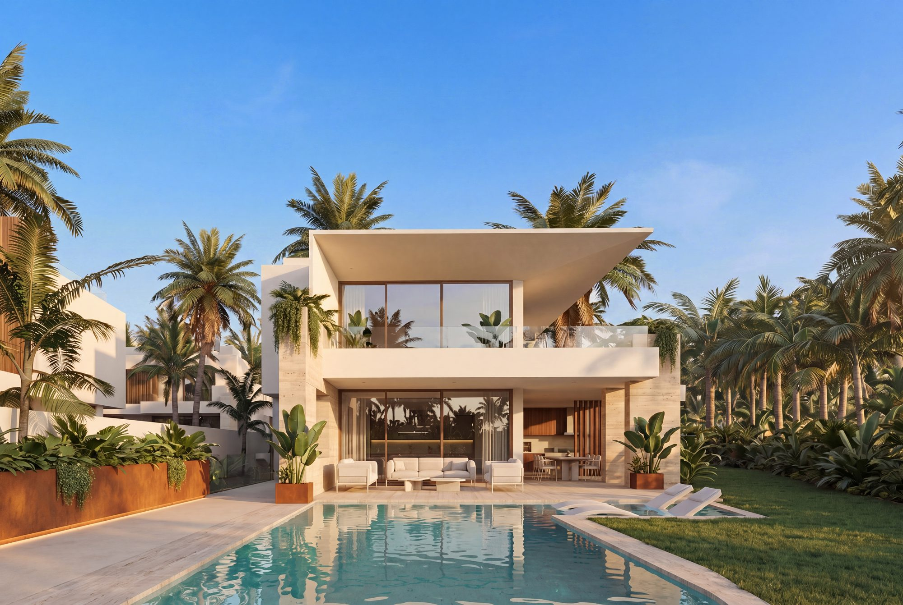
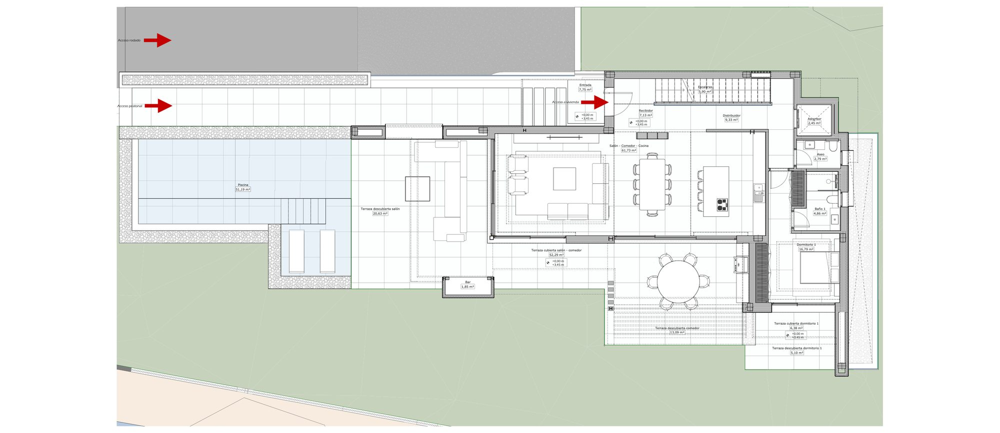
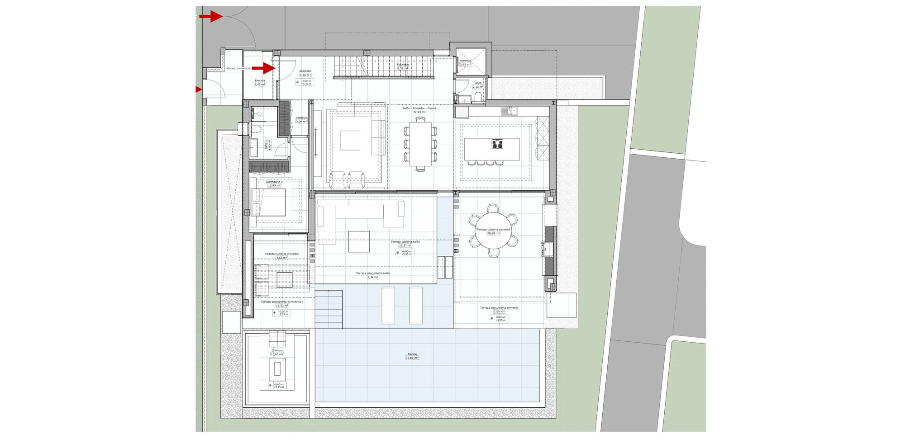
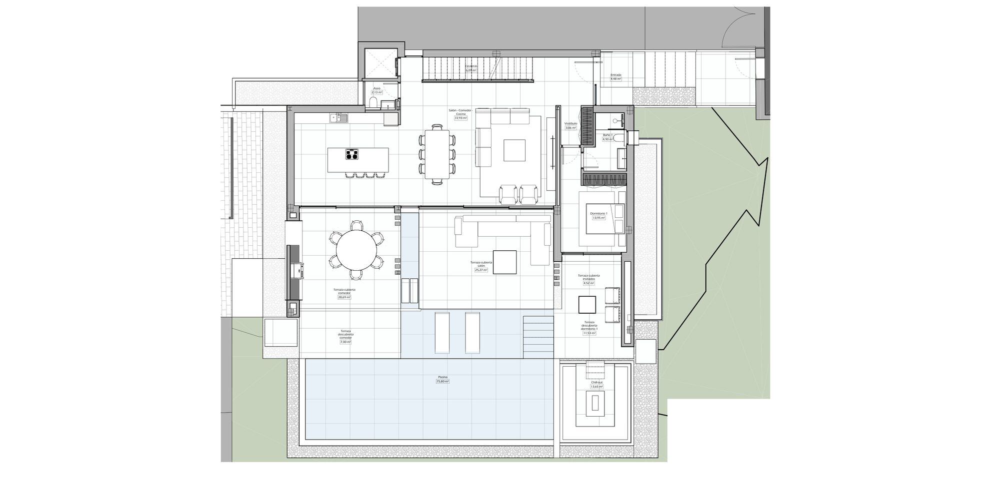
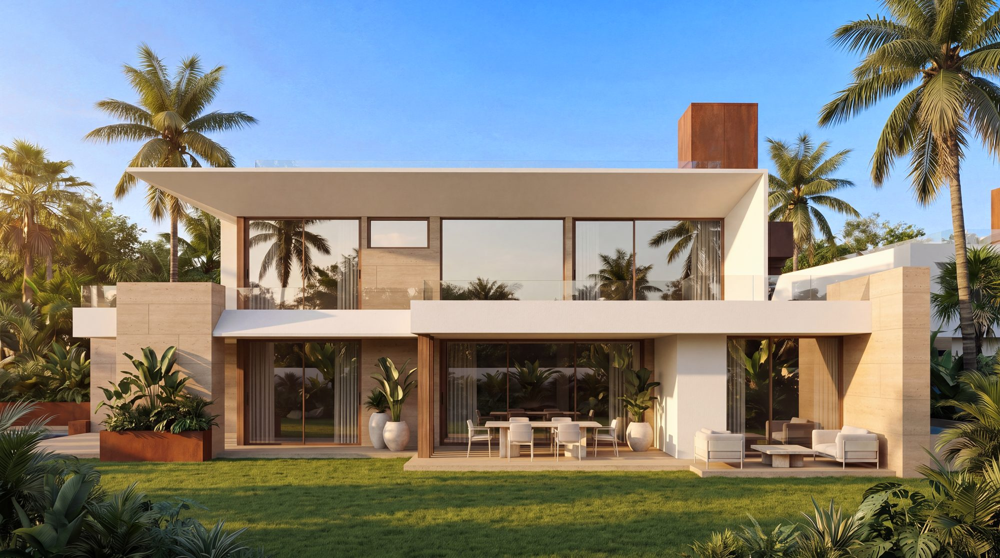
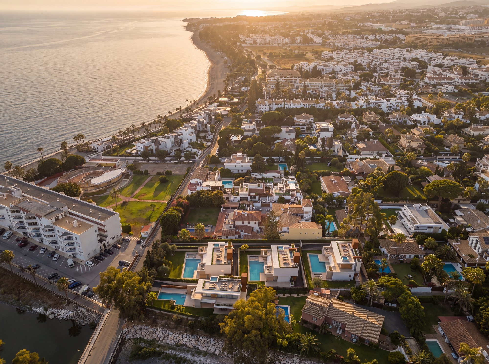

3 of 4 villas available
San Pedro Seaside Villas Four Villas in Cortijo Blanco, Marbella
Four villas in the Cortijo Blanco area of Marbella, on the coast between San Pedro de Alcántara and Puerto Banús and a short walk from the beach. Each has a basement with a garage, a games room and an office, a lift, a private pool and a solarium; three are available, from EUR 4,700,000 plus VAT, and one is sold. The completion date is to be confirmed.
Bedrooms4-5 bedrooms
Total built area808.34 - 821.22 sqm
Useful living area488.31 - 527.01 sqm
Plot751 - 889.06 sqm
Availability3 of 4 villas available
Available3 villas
Price rangeEUR 4,700,000 - EUR 4,950,000 + VAT
Overview
Four villas, three available
San Pedro Seaside Villas is a collection of four villas in the Cortijo Blanco area of Marbella, on the coast between San Pedro de Alcántara and Puerto Banús. Each stands on its own plot of 751 to 889.06 sqm with a garden and a private pool.
Every villa is laid out over a basement, a ground floor, a first floor and a solarium, with a lift serving the levels. The living, dining and kitchen area is on the ground floor beside the pool, and the basement holds a garage, a games room, an office, a recreation room and a laundry. The price list gives four bedrooms for Villa 1 and five for the other villas; the plans label three bedrooms and draw a basement recreation room with a bed.
The brochure describes open-plan layouts, floor-to-ceiling windows, double-height ceilings, 1.20 by 1.20 m porcelain tiles and underfloor heating. The price list gives a price for each available villa, excluding VAT. The documents still give no building licence, no construction stage and no completion date, so those are to be confirmed and we confirm them in writing.
Media
The villas in detail
Computer-generated views of the exteriors, the interiors, the basement and the surroundings, and the developer’s plans of every level of Villas 1, 2 and 4.
Location
Cortijo Blanco, between San Pedro and Puerto Banús
The villas are in the Cortijo Blanco area of Marbella, on the coast between San Pedro de Alcántara and Puerto Banús, a short walk from the beach. The brochure’s map also marks restaurants, Marbella old town, golf, a hospital and the Nueva Alcántara area within reach.
Residences
Four villas, one concept
Each card gives the price list’s figures for that villa, then the brochure’s. The price list gives a total built area and a useful living area; the brochure’s built-area table splits the ground and first floors into enclosed, covered and uncovered areas, so its totals include terraces. Where the two differ, both figures are named.
Villa 2, on a 752 sqm plot
Villa 3, sold
Villa 4, on an 888.15 sqm plot
Private Material
Current layouts, view positions and unit availability should be reviewed against the latest developer file before shortlisting.
Quality specifications
What the villas are built with
The developer’s own quality report, group by group, with the product brands as the report names them.
Structure
- Reinforced concrete structure, both vertical and horizontal elements, built to the Technical Building Code (CTE) and the applicable regulations, as per the project specifications.
- Foundations on a reinforced concrete slab, according to the geotechnical study.
- Reinforced concrete waffle slabs 35 cm deep (30 + 5 cm) with ribs at 84 cm centres, on reinforced concrete columns, all according to the structural calculations of the detailed design.
Facades, roofs and insulation
- Exterior walls: the outer leaf is perforated ceramic brickwork 11.5 cm thick with an internal cement mortar coat to limit thermal bridges. All walls are lined internally with rock wool thermal insulation and an air gap to optimise thermal comfort, and the inner face is finished with a double layer of 13 mm plasterboard on a 48 mm aluminium substructure with rock wool insulation inside.
- Accessible flat roof: a sloped base, a flexible waterproofing membrane, a protective M-5 cement mortar layer, rigid extruded polystyrene thermal insulation, a high-density polyethylene (HDPE) dimpled drainage sheet and an adjustable polypropylene pedestal substructure, finished with large-format, rectified, non-slip porcelain tiles, in line with the CTE and DIT.
- High-quality elastic exterior paint in three coats: a primer coat to reveal imperfections, an intermediate coat of filling and sanding to correct them, and a finish coat.
Partition walls
- Interior partitions between bedrooms and living areas: a double layer of 13 mm plasterboard on a 70 mm aluminium substructure with rock wool insulation inside. Total finished thickness 12.2 cm.
- Other interior partitions: a double layer of 13 mm plasterboard on a 48 mm aluminium substructure with rock wool insulation inside. Total finished thickness 10 cm.
- Interior partitions between the first-floor bedrooms and the living room, where there is double height: a double layer of 13 mm plasterboard on a 90 mm aluminium substructure with rock wool insulation inside. Total finished thickness 14.2 cm.
- Interior painting of all wall surfaces in three coats of premium-quality washable paint: a first coat to seal imperfections, a second coat with spackling and sanding to correct them, and a finishing coat.
- Continuous suspended false ceiling with a smooth finish, in 13 mm plasterboard screwed to a galvanised steel framework hung from the structural slab on threaded rod hangers at 500 mm intervals.
- Exterior false ceiling with a smooth finish on a metal framework, in 13 mm Knauf Aquapanel (or equivalent) board with tapered edges, finished in smooth matte white exterior-grade emulsion paint.
Exterior joinery
- Aluminium frames with a textured RAL 8002 lacquer finish and thermal break: fixed panels and operable balcony doors, with the Reynaers Slim Patio 68 series (or equivalent) for sliding units.
- Aluminium frames with a textured RAL 8002 lacquer finish and thermal break: the CS 77 series (or equivalent) for operable units.
- Security rating RC2 and RC3 on all window and door units.
- Interior and exterior railings in 15 mm tempered glass or 8+8 laminated safety glass (two 8 mm panes bonded with two colourless 0.38 mm polyvinyl butyral interlayers), installed on the parapets of the habitable first-floor terraces and at the fixed, walk-on skylight.
- Motorised vehicle access gate, Hörmann or equivalent.
Interior joinery
- Oak entrance door with a reinforced or armoured security locking system, 2.95 m high, with concealed hardware.
- Interior passage doors in lacquered MDF, in a colour to be determined by the project management, from floor to ceiling, with 4.5 cm thick leaves and concealed hardware.
- Wardrobe fronts in lacquered MDF with 3.00 cm thick leaves, from floor to ceiling; wardrobe interiors and fittings lined in melamine board, with 3000 K LED strip lighting.
Flooring and paving
- General interior flooring: Gunni Trentino Sand rectified porcelain tile, 1200 x 1200 mm, Class C1 or equivalent. Flush skirting recessed into the drywall, in moisture-resistant wood lacquered white (RAL 9010), 150 x 15 mm.
- Terrace flooring: Gunni Trentino Sand rectified porcelain tile, 1200 x 1200 mm, Class C3 or equivalent. Surface-mounted skirting in a special porcelain piece of the same material, 80 mm high.
- Acoustic insulation under interior floors: a flexible polyethylene sheet such as Impactodan, 10 mm thick, or equivalent.
- Exterior flooring of common areas: Gunni Trentino Sand rectified porcelain tile, 1200 x 1200 mm, Class C3 or equivalent. Surface-mounted skirting in a special porcelain piece of the same material, 80 mm high.
Facade cladding
- Exterior facade finish in screeded render (Weber brand or equivalent) and white silicate paint, except for specific facade areas clad in natural stone or natural wood.
- Interior finishes in plasterboard. Vertical and horizontal surfaces painted with emulsion paint in a colour chosen by the client and the project management, and washable paint in wet areas.
- Facade cladding in natural travertine marble (Cosentino / Scalea TravAbassi Terra or equivalent), 2.00 cm thick, with concealed mechanical fixings, according to the facade design in the detailed construction plans.
Toilets and bathrooms
- Mirror: custom-made Gunni & Trentino mirror, Omlam model, with a 15 mm sandblasted perimeter border and warm perimeter LED lighting, 110 cm high by 50 cm wide, or equivalent.
- Countertop: Gunni & Trentino solid surface bathroom countertop, 181 x 51 x 12 cm, double basin, including support brackets, or equivalent.
- Vanity unit: Gunni & Trentino vanity unit, 180 x 50 x 30 cm, in a matte natural walnut finish, with two 90 cm drawers, or equivalent.
- Basin mixer: Gunni & Trentino wall-mounted basin mixer (Zucchetti brand or equivalent), brushed finish trim set.
- Shower: Gunni & Trentino 2-way shower mixer (Zucchetti brand or equivalent), brushed finish trim set, with a flush-mounted 400 x 400 mm ceiling shower head in brushed stainless steel (PVD Long Life AISI 316L) and a Gunni & Trentino hand shower kit (Zucchetti brand or equivalent) with a brushed finish.
- Toilet: Villeroy & Boch ViClean I-200 rimless shower toilet, with a concealed cistern and flush plate by Geberit or an equivalent brand.
- Reversible shower channel, 80 cm.
- Bathroom floors and shower bases in rectified porcelain tile (Gunni & Trentino Sand model, 120 x 120 format, Class C3) or an equivalent product.
- Shower wall cladding in Calacatta Black tile (120 x 120 format) or equivalent, or San Pe Brown tile (120 x 120 format) or equivalent, depending on the villa type.
Electricity and lighting
- Mechanisms: Gira E2 in matte white, with Gira 95 touch-sensor push-buttons in white, or similar equivalent.
- Interior lighting: recessed ceiling lights, downlights or equivalent fixtures.
- Interior LED lighting with warm white lamps (2700 K, or 3000 K in bathrooms). IP33 rating throughout the home and IP65 in bathrooms.
- Lighting of pedestrian access along paths and stairways: recessed LEDS C4 fixtures, Tiny model or equivalent, finished in the same RAL colour as the aluminium joinery (reference image).
- General outdoor lighting: LEDS C4 wall-mounted fixtures, Afrodita model or equivalent, finished in the same RAL colour as the aluminium joinery (reference image).
Low voltage
- Centralised electrical panel in the plant room and sub-panels on each floor.
- Network and internet installation in Category 6 cabling for RJ45 outlets in bedrooms, the living room and living areas, with a switch, a router and a fibre-optic connection to the development’s main service line.
- TV outlets in the living room, the bedrooms and the basement playroom.
- Integrated technical interior lighting throughout the home, recessed in the ceiling, in LED technology with a 3000 K colour temperature.
- Exterior garden lighting using fixtures specified in the landscaping plan.
- Fire protection system, including emergency lighting and fire extinguishers.
- Video intercom for pedestrian access, integrated into the home automation system.
- Pre-installation for an 11 kW electric vehicle charging point, integrated into the home automation system.
- Photovoltaic pre-installation of 6 to 8 kW (the maximum allowed by the area available on the non-walkable parts of the solarium and first floor).
- Pre-installation for motorised curtains in all rooms.
Plumbing, ventilation, air conditioning and heating
- Cross-linked polyethylene (PEX) plumbing distribution for hot and cold water, insulated with Armaflex.
- Hot water recirculation to the points of use, with a pump controlled by the home automation system.
- Main shut-off valves in a utility cabinet: one for the home and one for the garden.
- Shut-off valves in all wet areas.
- Water supply shut-off system, split between the home and the garden and integrated into the home automation system.
- A 5,000-litre water storage tank (Rothagua brand or equivalent), with a filter, a pressure booster set with two variable-frequency pumps operating in parallel, and a water softener.
- Domestic hot water from an aerothermal heat pump (Daikin brand or equivalent) with a 500-litre storage tank.
- Indoor air renewal in wet areas and utility rooms by a single-flow mechanical ventilation system (Siber brand or equivalent).
- Air conditioning by a Mini VRV system (Daikin brand or equivalent) for heating and cooling, with zoning managed by Airzone.
- Hydronic underfloor heating on the main floors (Uponor brand or equivalent), powered by the heat pump system (Daikin brand or equivalent).
Elevator
- TKE (ThyssenKrupp) brand elevator or equivalent: basic finish in stainless steel and glass, with flooring matching that of the home and exterior doors lacquered to match the colour of the interior walls of the homes.
Home automation
- Basic home automation system with the following functions.
- Integrated management and control hub: a centralised system that unifies lighting, climate control and security in a single interface (an app or touch panels).
- Smart lighting: automatic control of intensity levels and scenes according to the time of day, presence or activity.
- Zoned climate control and air quality: independent temperature regulation for each room, covering heating, cooling and ventilation.
- Motorisation of curtains and awnings: automation of exterior and interior elements to manage natural light, privacy and energy savings.
Solarium
- Access to the solarium by an integrated staircase, as an additional level of the home.
- Glass railings at the front of the terrace to maximise the views of the garden area.
- A leisure area for sun loungers or terrace furniture, overlooking the garden.
- Pre-installation for an outdoor kitchen and/or barbecue, lighting and power outlets.
- Pre-installation for a jacuzzi.
Gardening and pool
- Landscaping according to the project’s garden and tree planting design.
- Zoned automatic irrigation, with sprinklers on lawn areas and drip irrigation on planted areas.
- Swimming pool with salt chlorination, pH control and RGB LED lighting integrated into the home automation system.
- Pre-installation for a pool heat pump.
Wellness and luxury features
- Pre-installation for a 2 x 2 m sauna and hammam.
- Pre-installation for a home cinema.
- Pre-installation for a climate-controlled wine cellar with integrated three-zone refrigeration units (red wine, white wine and sparkling wine).
Kitchen furniture
- Custom-designed and manufactured kitchen cabinetry by Modulnova, with base units, wall units and tall units, and fronts in a Milltech finish for a high-quality, contemporary aesthetic.
- Internal cabinet bodies in 19 mm laminate board with a Basic Grigio finish.
- Drawers and pull-out baskets in lacquered stainless steel, with full-extension runners and soft-close mechanisms for smooth, silent operation and high durability.
- Cabinet opening by an integrated lacquered gola profile, for a clean look without visible handles.
- Plinths in lacquered aluminium, coordinated with the cabinetry.
- Units and floor-to-ceiling tall units, to use the available space fully and give a continuous solution with ample storage. The configuration, layout and dimensions of the cabinetry follow the interior design plan and the final kitchen specification.
Kitchen accessories, countertop and appliances
- LED lighting under the wall units.
- A 12 mm thick porcelain countertop.
- Backsplash between base and wall units in the same 12 mm thick material, with cutouts for auxiliary power outlets; island side panels with mitred joints extending to the floor.
- Miele appliances or a similar equivalent.
- Shown in the report: an integrated fridge-freezer, a multifunction oven in Obsidian Black, an induction cooktop with flexible cooking zones for up to 5 cooking vessels, a downdraft extractor hood, a fully integrated dishwasher and a washing machine.
Source: the developer’s quality report for this development, a 41-page document in Spanish and English that carries no date or version number. Where it says “or equivalent”, so does this page. It lists the sauna and hammam, the home cinema, the wine cellar, the jacuzzi, the pool heat pump, the electric vehicle charger, the photovoltaic system and the outdoor kitchen as pre-installations only; we ask what is supplied and what is provision for later. The brochure says underfloor heating throughout, while the report lists it on the main floors; we confirm which areas have it.
Availability
3 villas currently available
Four villas in total: Villas 1, 2 and 4 are available, from EUR 4,700,000 to EUR 4,950,000 plus VAT, and Villa 3 has been sold. Nueva Living reconfirms price and availability with the developer before any viewing.
Available Homes3
Starting PriceEUR 4,700,000 + VAT
Price RangeEUR 4,700,000 - EUR 4,950,000 + VAT
CheckedOctober 2026
View All 3 Available Homes

Villa 1
Available
- Bedrooms
- 4 bedrooms
- Total built
- 808.34 sqm
- Usable
- 488.31 sqm
- Solarium
- 92.55 sqm
- Plot
- 889.06 sqm
- Garden
- 406.15 sqm
- Floor
- Lower level, ground floor, first floor & solarium
EUR 4,950,000
Ask about Villa 1
Villa 2
Available
- Bedrooms
- 5 bedrooms
- Total built
- 821.22 sqm
- Usable
- 527.01 sqm
- Solarium
- 96.54 sqm
- Plot
- 752 sqm
- Floor
- Lower level, ground floor, first floor & solarium
EUR 4,800,000
Ask about Villa 2
Villa 4
Available
- Bedrooms
- 5 bedrooms
- Total built
- 821.22 sqm
- Usable
- 527.01 sqm
- Solarium
- 96.54 sqm
- Plot
- 888.15 sqm
- Floor
- Lower level, ground floor, first floor & solarium
EUR 4,700,000
Ask about Villa 4Prices, bedrooms, bathrooms, total built areas, useful living areas, solariums and plots are transcribed from the developer’s price list (three of four villas priced; Villa 3 is marked sold). Prices exclude VAT: the list says all payments carry 10% VAT on top. The price list is the commercial source; the brochures and plans supply the room areas and the garden. Where they differ, both are named: Villa 1’s total built area is 808.34 sqm in the price list and 808.35 sqm in the brochure, and Villa 2’s plot is 752 sqm in the price list and 751 sqm in the brochure; the price list is shown. The price list gives 4 bedrooms for Villa 1 and 5 for Villas 2, 3 and 4, with 4+2 and 5+2 bathrooms, where the plans label three bedrooms. The brochure’s total built area includes covered and uncovered terraces, and the price list’s useful living area is the interior figure. Villa 1’s garden is the brochure’s; Villas 2 and 4 show none because the brochure repeats Villa 3’s garden figure for them. The documents give no delivery date. The room names on the plans are in Spanish.
Affordability
Estimate your monthly payment
A quick indicative estimate only. Confirm exact terms with your lender before making any decision.
Purchase price€0
Deposit30% · €0
Set to 30% by default — as a non-Spanish resident, lenders typically finance up to 70% of the property value. Your own maximum will depend on your bank and financial profile.
Mortgage term25 years
Estimated monthly payment€0
Cash needed without a mortgage€0
Cash needed with a mortgage (deposit + costs)€0
Deposit€0
Loan amount€0
Financed0%
Total interest paid€0
Taxes & purchase costs€0
Amenities
What the scheme gives you
-
01 · Wellness
Private Pool
Belonging to the home
-
02 · Outdoors
Private Garden
Enclosed and the home’s own
-
03 · Outdoors
Solarium
Open roof terrace for the sun
-
04 · Everyday
Lift
Every floor reached
-
05 · Everyday
Private Garage
Below the building
-
06 · Everyday
Underfloor Heating
Warmth from the floor up
-
07 · Everyday
Aerothermal System
Heating, cooling and hot water
-
08 · Everyday
Air Conditioning
Cooling and heating by duct
-
09 · Everyday
Home Automation
Lighting and climate from a phone
-
10 · Everyday
Automatic Irrigation
-
11 · Everyday
Pre-Installation For Electric Vehicle Charging
A point for the car
-
12 · Services
Games Room
Table games and consoles
-
13 · Services
Laundry Room
Why This Project
Why this project matters
Four villas on their own plots a short walk from the beach, with the finishes written down product by product.
Why It Fits
Who it is for
Buyers who want a large villa with a basement, a pool and a lift close to the beach, in an established part of Marbella between San Pedro de Alcántara and Puerto Banús.
What makes it different
Each villa has a basement with a garage, a games room and an office, a solarium above the first floor, a lift to every level and a private pool, and the quality report names the products used.
Why location matters
The brochure places the villas in the Cortijo Blanco area of Marbella, a short walk from the beach, with San Pedro de Alcántara and Puerto Banús on either side.
Why check availability
Three of the four villas are available and one is sold, at EUR 4,700,000 to EUR 4,950,000 plus VAT. Nueva Living reconfirms price and availability with the developer before any viewing.
Investment Case
Prices
EUR 4,800,000 for Villa 2, EUR 4,700,000 for Villa 4 and EUR 4,950,000 for Villa 1, excluding VAT. The price list does not say what the price includes, so we confirm that in writing.
VAT
The price list says all payments carry 10% VAT on top, so the prices exclude VAT. We confirm the other taxes and purchase costs in writing.
Payment schedule
A reservation of EUR 50,000, then 30% after 30 days (marked PPC in the price list), 20% after six months and 50% on completion, each plus 10% VAT. The list does not say whether the reservation counts towards the first 30% or explain PPC, and we ask for the guarantee on payments made before completion.
Availability
Three villas are available and Villa 3 is sold. We reconfirm availability with the developer before any viewing or reservation.
Trust & Diligence
Licence, guarantees and completion
The documents do not state a building licence, a construction stage or a completion date. We ask for the licence, the bank guarantee that covers amounts paid on account and the contractual date.
The areas
The price list and the brochure differ on Villa 1’s total (808.34 and 808.35 sqm) and on Villa 2’s plot (752 and 751 sqm). Inside the brochure, Villa 1’s ground-floor parts add up to 248.91 sqm against 244.15 sqm printed, Villa 2’s page repeats the basement of Villas 3 and 4 although its plan has a smaller garage, and Villa 4’s garden equals Villa 3’s on a larger plot. We ask for corrected figures and for the area the contract uses.
Distances
The brochure’s welcome text puts the beach 300 metres away and its map says 0.1 km from San Pedro Beach; it calls Puerto Banús a short walk while its map says 2 km. We confirm the walking distances on site.
Bedrooms
The price list gives 4 bedrooms for Villa 1 and 5 for the other villas, with 4+2 and 5+2 bathrooms. The plans label three bedrooms and draw a basement recreation room with a bed. We ask which rooms count and what each villa is sold as.
New to buying off-plan in Spain? How buying a new-build works sets out the seven steps, and off-plan versus resale covers the deposits, guarantees and timelines involved.

Architecture
Contemporary lines, natural materials
The brochure describes each villa as contemporary architecture with clean lines and natural textures, with open-plan layouts, floor-to-ceiling windows and double-height ceilings to bring in natural light and link the house to its garden and pool.
In the renders the facades are white with natural stone and timber cladding in places, and the upper floor projects over the terraces below.
- Structure — Reinforced concrete to the Technical Building Code, on a reinforced concrete slab foundation set by the geotechnical study, with 35 cm waffle slabs.
- Facade — Perforated ceramic brick with rock wool insulation and an air gap, finished in render and white silicate paint, with natural stone or natural timber on specified areas.
- Glazing — Thermally broken aluminium frames, security-rated RC2 and RC3, and glass railings in 15 mm tempered or 8+8 laminated glass.
- Flooring — 1200 x 1200 mm rectified porcelain tiles indoors and on the terraces.
- Ceilings — Smooth plasterboard false ceilings, and double height between the living room and the first-floor bedrooms.

Cinematic Presentation
See the site and the area
The documents do not say how far the build has gone, so a visit is about the location, the plans and the stage of the work.
On site
Walk the plot and the street, and the way to the beach.
On foot
We walk to the beach and the restaurants with you and time it.
On paper
Licence, guarantee and the contract, before anything is signed.
Lifestyle
Pool, garden, solarium and basement
What the brochure, the plans and the quality report give for the outdoor areas and the lower level.
Next Steps
What happens next
Request the project file
The plans, the quality report and the price list for the villas that interest you.
Compare the options
See this alongside the other villa projects we hold in Marbella and San Pedro.
Private viewing
See the site and the area with us, and the plans against the site.
Reserve
A reservation of EUR 50,000, then the payments in the developer’s schedule, each plus 10% VAT, once we have confirmed the terms in writing.
FAQ
Common buyer questions
Can foreigners buy property in Spain?
Yes. There are no restrictions on non-Spanish nationals buying property in Spain, whether as a resident or non-resident.
What is an NIE number and do I need one?
An NIE (Numero de Identificacion de Extranjero) is a tax ID number required for any property purchase in Spain by a non-Spanish national. Nueva Living can guide you through obtaining one before you reserve.
What costs should I budget for on top of the purchase price?
Buyers typically budget for transfer tax or VAT, notary fees, land registry fees and legal fees on top of the purchase price. Nueva Living provides a full, current cost breakdown for your chosen residence before you reserve.
Can I get a mortgage in Spain as a non-resident?
Many Spanish banks offer mortgages to non-resident buyers, typically financing a portion of the purchase price. Exact terms depend on the bank and your personal financial profile.
What is the difference between off-plan and completed properties?
Off-plan means the development is still under construction and is usually sold with staged payments through to completion. A completed property is ready to view and move into now.
How does the reservation and payment process work?
Reservation and payment structures vary by development and are set out in full before you reserve. Nueva Living reconfirms the current schedule for your chosen residence at every step.
Can I rent out the property after purchase?
This depends on the individual development and local regulations, which can vary by community and municipality. Nueva Living will confirm the specific rules for a development before you reserve.
Do I need a lawyer?
Yes, we strongly recommend independent legal representation for any property purchase in Spain. Nueva Living can put you in touch with independent lawyers experienced in Costa del Sol property.
How many villas are available?
Four villas make up the collection and three are available: Villas 1, 2 and 4. Villa 3 is marked as sold in the developer’s price list and brochure. We confirm the current position with the developer before any viewing.
What do the villas cost?
According to the price list, EUR 4,950,000 for Villa 1, EUR 4,800,000 for Villa 2 and EUR 4,700,000 for Villa 4, each plus VAT. We confirm the price of each in writing before any viewing.
Is VAT included?
No. The price list says all payments carry 10% VAT on top. We confirm the other taxes and purchase costs in writing.
What is the payment schedule?
A reservation of EUR 50,000, then 30% after 30 days, 20% after six months and 50% on completion, each plus 10% VAT. The list marks the 30% as PPC and does not say whether the reservation counts towards it, so we confirm both.
When will the villas be finished?
No document we hold gives a completion date or says how far the build has gone. We ask for the construction stage and the contractual date.
How big are the villas?
According to the price list, the total built area is 808.34 sqm for Villa 1 and 821.22 sqm for Villas 2, 3 and 4, the useful living area is 488.31 and 527.01 sqm, the solariums are 92.55 and 96.54 sqm, and the plots are 889.06, 752, 751 and 888.15 sqm. The brochure prints 808.35 sqm and a 751 sqm plot for Villas 1 and 2. The total built area includes the basement, the solarium and covered and uncovered terraces; the useful living area is the interior figure.
How many bedrooms are there?
The price list gives 4 bedrooms for Villa 1 and 5 for Villas 2, 3 and 4, with 4+2 and 5+2 bathrooms. The plans label three bedrooms and draw a basement recreation room with a bed, so we ask which rooms count.
Is the heating underfloor throughout?
The brochure says underfloor heating throughout, while the quality report lists hydronic underfloor heating on the main floors. We confirm which areas have it.
Enquire
Ask about San Pedro Seaside Villas
Tell us what you need and we will come back with current availability, the plans and the price.